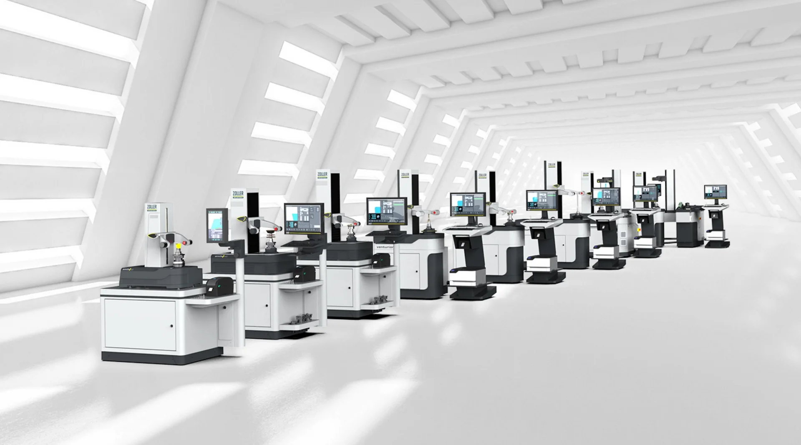

They deliver a considerable increase in efficiency, productivity, and sustainability: ZOLLER's micron-precise presetting and measuring machines.

Sustainability plays a central role in ZOLLER's corporate philosophy. As an innovative provider of precise measuring machines for setting, measuring and inspecting cutting tools, software, interfaces, cloud services and solutions for the automation of tool processes, it is important to us not only to achieve economic success, but also to take responsibility for the environment and society.
The integration of sustainable practices into our business processes is of crucial importance to ZOLLER. We are aware that our activities have an impact on the environment and therefore rely on resource-saving technologies and energy-efficient production methods. By using environmentally friendly materials and optimizing our logistics processes, we actively contribute to reducing our ecological footprint. We also promote a corporate culture that focuses on sustainability. Our employees are trained and motivated to make sustainable decisions and contribute innovative ideas to improve our environmental footprint.
We believe that every individual can make a contribution to making our company fit for the future. ZOLLER is also committed to social responsibility. We support local communities and are committed to fair working conditions. By upholding ethical standards in our supply chain, we ensure that our partner companies also operate sustainably. Overall, sustainability is not just a trend for ZOLLER, but a long-term goal. We are convinced that acting responsibly not only helps to protect our environment, but also strengthens the trust of our customers and increases our competitiveness. Together with our partners and customers, we are working to shape a sustainable future—for our company and for future generations.
They deliver a considerable increase in efficiency, productivity, and sustainability: ZOLLER's micron-precise presetting and measuring machines.
